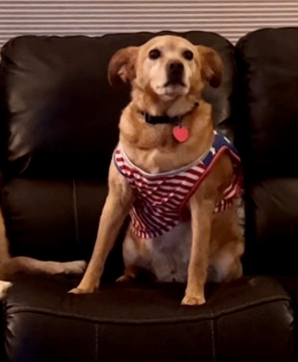
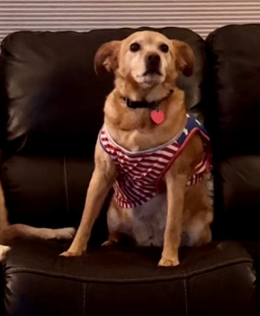

Our luxury yurts are permanent strucures four feet off the ground. Each yurt is fully enclosed with canvas walls, a wooden floor, and a roof dome that can be opened.
How are the yurts furnished?
Each yurt is furnished with a queen-size bed with down quilt and gas-fired stove. Your luxury camping experience includes electricity and a sink with hot and cold running water. Shower and restroom facilities are located in the lodge.
What should I bring?
Most guests pack comfortable walking shoes and plan to dress for changing weather with light layers of clothing. It's also helpful to bring a flashlight and a sense of adventure!


 
